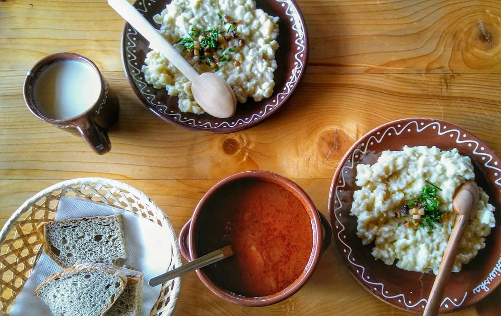

Baraní guľáš podľa @lucytta_k — Normy Jedál
Také liptovskie papaníčko 🍴 Salaš Pastierska
#bryndza #beautifulplaces #bread #blogger #colours #cestujem #dobrejedlo #dnesjem #foodphotography #foodart #foodporn #foodlover #food #haluskysbryndzou #baranigulas #slovakia #slovakfood #homesweethome #instatravel #instafood #instaphotos #liptov #nodiet #photography #photooftheday #photo #thisisslovakia